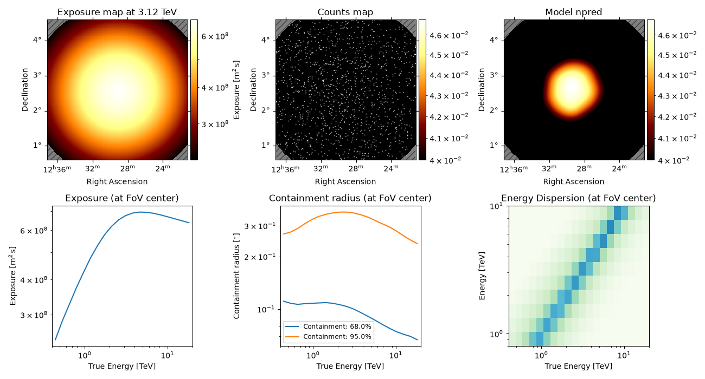
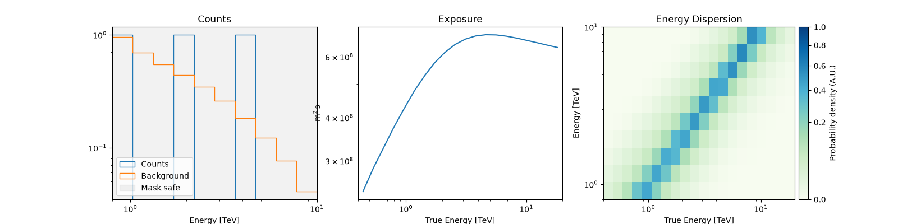
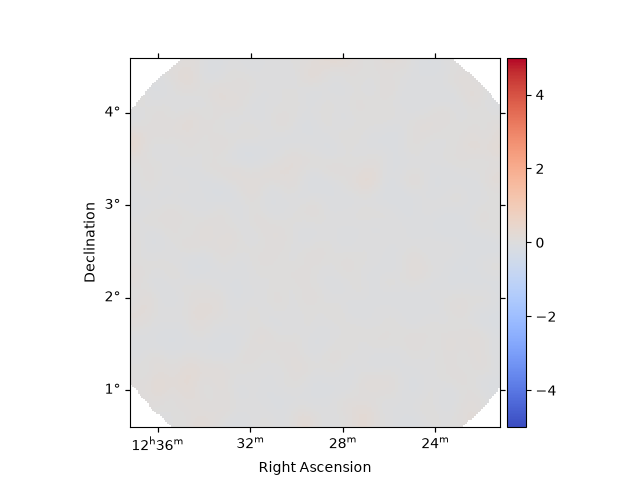
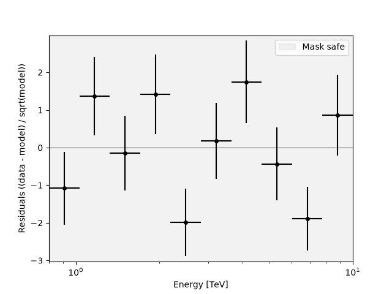
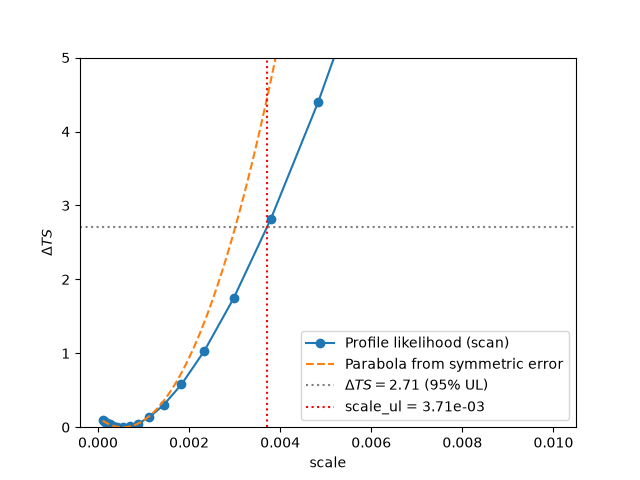
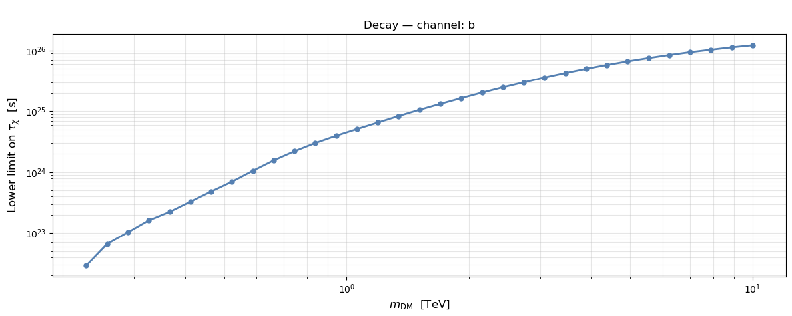
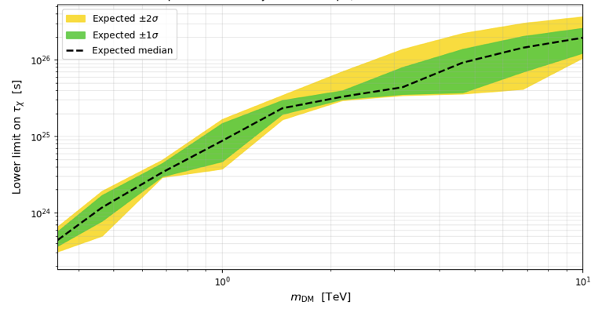

Note
Go to the end to download the full example code or to run this example in your browser via Binder.
Dark Matter indirect search analysis with Gammapy#
This tutorial covers a full analysis pipeline for the indirect search of dark matter using Gammapy. We assume basic familiarity with Gammapy’s data structures and the Dark Matter module. If you are new to Gammapy, we recommend first working through the introductory and the Dark Matter Basics and Data handling tutorials.
In this example we perform a 3D analysis — using both spatial and spectral information, as opposed to a 1D (spectral-only) analysis.
To perform a dark matter analysis, we need to fit the data with a model that includes both the background and the dark matter signal component. Rather than fitting the physical parameters (e.g. the annihilation cross-section \(\langle\sigma v\rangle\) or the decay lifetime \(\tau\)) directly, it is common practice to introduce a scale parameter, that rescales the predicted dark matter signal. Depending on the DM model assumed, the constrained quantity is different.
Dark matter annihilation
The expected gamma-ray flux from DM annihilation is:
The physical quantity of interest is the velocity-averaged annihilation cross section ⟨σv⟩. A larger ⟨σv⟩ means a brighter signal. A non-detection gives an upper limit on ⟨σv⟩: the DM particles annihilate at most this efficiently.
In Gammapy’s
DarkMatterSpectralModel, ⟨σv⟩ is
encoded through a dimensionless `scale` parameter:
where \(\langle\sigma v\rangle_{\rm ref} \approx 3\times10^{-26}\)
cm³ s⁻¹ is the thermal relic value. An upper limit on scale
translates directly into an upper limit on ⟨σv⟩:
Dark matter decay
The expected gamma-ray flux from DM decay is:
The physical quantity of interest is the DM lifetime τ_χ. Note that it appears in the denominator: a longer lifetime means a fainter signal — the opposite behaviour from the annihilation case. A non-detection gives a lower limit on τ_χ: the DM particle must live at least this long.
In Gammapy’s
DarkMatterSpectralModel, the
lifetime is encoded through the same `scale` parameter, but now it
multiplies the decay rate (inverse lifetime):
where \(\tau_{\rm ref}\) is an internal reference value
(LIFETIME_AGE_OF_UNIVERSE ≈ 4.3 × 10¹⁷ s). Because of the inverse
relationship, an upper limit on scale becomes a lower limit
on τ_χ:
This approach decouples the statistical treatment from the specific physical model: once we obtain the best-fit value of the scale and its uncertainty, we can translate it directly into a constraint on \(\langle\sigma v\rangle\) or \(\tau\) through the linear relation above (Bergström, L., et al., 1998).
In this way, the steps/sections followed in this tutorial are:
Data. We obtain and manage the data to be analyzed. In this case, this corresponds to a 3D dataset (spatial + spectral information).
Analysis of signal detection. We perform a statistical test to determine whether the dataset contains a genuine signal or is compatible with background only, and outline the procedure to follow in each case.
Obtaining limits.
No signal detected: we derive upper limits on the dark matter cross-section (or decay lifetime).
Signal detected: we derive confidence intervals on the signal parameters.
Exclusion curve: scanning over masses. We repeat the limit-setting procedure over a grid of dark matter masses to build the exclusion curve.
Bands plot: uncertainty bands on the exclusion curve. We compute the expected sensitivity and its uncertainty bands (1σ/2σ) around the exclusion curve, following the standard bands plot convention.
Prerequisites
If you are new to Dark Matter, please see the tutorial Dark Matter Indirect Detection with Gammapy: Basics
If you are new to Gammapy, please check 3D Cube and Data analysis
Setup#
from gammapy.datasets import MapDataset, Datasets
from gammapy.maps import MapAxis, WcsGeom
from gammapy.modeling.models import (
FoVBackgroundModel,
Models,
SkyModel,
PointSpatialModel,
)
from gammapy.modeling import select_nested_models
from gammapy.astro.darkmatter import DarkMatterDecaySpectralModel, profiles, JFactory
from gammapy.modeling import Fit, stat_profile_ul_scipy
from gammapy.estimators import ParameterEstimator
from regions import CircleSkyRegion
import astropy.units as u
from astropy.coordinates import SkyCoord
import numpy as np
import matplotlib.pyplot as plt
from mpl_toolkits.axes_grid1 import make_axes_locatable
Analysis of a Dark Matter source#
1. Data#
For this tutorial we will use the data of a non-signal dataset provided by the Gammapy database.. Additionally, we are going to consider that the data follows an Einasto profile and we are going to study the case of Decay with channel b.
# We obtain the data
dataset = MapDataset.read("$GAMMAPY_DATA/datasets/empty-dl4/empty-dl4.fits.gz")
print(dataset.meta_table)
TELESCOP OBS_ID OBS_MODE ... GEOLAT ALTITUDE
...
-------- ------ -------- ... ------------------- ------------------
HESS 20275 POINTING ... -23.271777777777796 1834.9999999997835
In this case we are analysing a DL4 product, where the data is already filtered and binned, but in the case of using other formats (i.e., DL3), we have the option of performing any data selection or reduction that we may need (i.e. set the energy bounds, specific observtion selection…).
# We set our target position. In this case we use the same as in the dataset, since we only have one observation. Let's pretend we are interested on that source
target_pos = SkyCoord(
ra=187.27791666667 * u.deg, dec=2.55238888889 * u.deg, frame="icrs"
)
target_dist = 16400 * u.kpc
# Geometry map we are going to work with
geom = WcsGeom.create(
binsz=0.1, # Pixel size
skydir=target_pos, # Sky position of the target, center of the map
width=3.0, # Width of the map (i.e 3x3 map)
frame="icrs", # Coordinates system
)
# DM Spatial distribution
spatial_model = PointSpatialModel(
lon_0=target_pos.ra, lat_0=target_pos.dec, frame="icrs"
)
# DM spectral distribution
# DM parameters: mass and channel
channel = "b"
massDM = 10 * u.TeV
# This density data is not accurate for M87, but we set these values as examples
r_s = 0.91 * u.kpc # Scale radius
rho_s = 1.3e7 * (u.M_sun / u.kpc**3) # Scale density
rho_s_GeV = rho_s.to(u.GeV / u.cm**3, equivalencies=u.mass_energy()) # Units conversion
# Define the DM profile. Check profiles.DMProfile.__subclasses__() for more profiles
profile = profiles.EinastoProfile(r_s=0.91 * u.kpc, rho_s=rho_s_GeV)
# Dfactor - This can also be calculated with the class JFactory, but we set the value for simplicity. You can look for it in dedicated papers.
dfactory = JFactory(
geom=geom, # Geometry map
profile=profile, # Chosen density profile
distance=target_dist, # Target distance
annihilation=False, # Set if it is annihilation (true) or decay (false)
rmax=1000
* u.kpc, # Physical size of the dark matter halo in kpc. We set 1000 just as an example
)
# Computation of the J factor
dfact = dfactory.compute_jfactor()
# Define a region of interest (i.e., 0.1 deg circle)
sky_reg = CircleSkyRegion(center=target_pos, radius=0.1 * u.deg)
pix_reg = sky_reg.to_pixel(wcs=geom.wcs)
# Integration of DFactor within that region
total_dfact = pix_reg.to_mask().multiply(dfact).sum()
spectral_model = DarkMatterDecaySpectralModel(
mass=massDM,
channel=channel,
jfactor=total_dfact,
scale=0, # Example so we do NOT get a signal
)
# Combined model
sky_model = SkyModel(
spatial_model=spatial_model, spectral_model=spectral_model, name="dm"
)
bkg_model = FoVBackgroundModel(dataset_name=dataset.name)
# Attach the DM model and a Field-of-View background model
dataset.models = Models([sky_model, bkg_model])
dataset.peek()

2. Analysis of signal detection#
To verify that our dataset contains no dark matter signal, we perform a likelihood ratio test between two hypotheses (Wilks, S., 1938). See Statistics in Gammapy for more details about this statistical procedure.
Gammapy’s Fit class provides a unified interface to several
optimization backends; by default it uses
iminuit, a Python wrapper around
the MINUIT2 C++ library originally developed at CERN, the de facto
standard optimizer in high-energy and astroparticle physics. MINUIT
performs a maximum-likelihood fit and additionally provides robust
parameter errors and covariance estimates via the Hesse and Minos
algorithms.
During the fit, the optimizer adjusts all free parameters of the
model — the background normalization parameters (or scale (related
to ⟨σv⟩ or 1/τ_χ, depending on whether we are studying annihilation or
decay) if you are making a signal study) — to maximize the Poisson
likelihood between the observed (or simulated) counts and the model
prediction. All other parameters remain fixed at their assumed values.
Not all model parameters are varied during the fit (see Models): each parameter can be set as free or frozen, and free parameters can further be given bounds (min/max values) to keep the fit within a physically meaningful range. Typically, the background normalization is left free to absorb residual mismatches between the assumed and true background level, while the spectral shape parameters (e.g. the DM mass or the spectral channel) are kept fixed to the values under study, leaving only the `scale` parameter (related to ⟨σv⟩ or 1/τ_χ, depending on whether we are studying annihilation or decay) free to vary. During the fit, the optimizer adjusts all free parameters of the model to maximize the Poisson likelihood between the observed (or simulated) counts and the model prediction, while all fixed parameters remain at their assumed values.
Rather than performing the two fits by hand, we use Gammapy’s
select_nested_models function, which automates this
nested-hypothesis test: it keeps the background and any other sources in
the field of view free and identical in both fits, and only freezes the
DM scale parameter to 0 for H0, restoring its original state
afterwards.
# First check the parameters of the model
print(dataset.models.parameters.to_table())
type name value unit error min max frozen link prior
---- --------- ---------- ---- --------- ---------- --------- ------ ---- -----
scale 0.0000e+00 0.000e+00 nan nan False
lon_0 1.8728e+02 deg 0.000e+00 nan nan False
lat_0 2.5524e+00 deg 0.000e+00 -9.000e+01 9.000e+01 False
tilt 0.0000e+00 0.000e+00 nan nan True
norm 1.0000e+00 0.000e+00 nan nan False
reference 1.0000e+00 TeV 0.000e+00 nan nan True
We see that the coordinates are free parameters, we should freeze them so we make sure we study the target we want.
dataset.models["dm"].spatial_model.freeze()
# We unfroze norm and tilt so the background model can be fitted.
dataset.models["stacked-bkg"].parameters["norm"].frozen = False
dataset.models["stacked-bkg"].parameters["tilt"].frozen = False
result = select_nested_models(
datasets=Datasets(dataset),
parameters=[spectral_model.parameters["scale"]],
null_values=[0],
)
TS = result["ts"]
print(f"TS = {TS:.4f}")
TS = 0.1512
The TS value is expected to be around 0 for a background-only dataset, indicating that the addition of the DM signal does not significantly improve the fit. Additionally, we can make a visual check of our data to verify this result.

Residuals#
After fitting the model, it is important to check the residuals to assess how well the model (source+background) describes the data.
# Spatial residuals map
dataset.plot_residuals_spatial(
method="diff/sqrt(model)",
smooth_kernel="gauss",
smooth_radius=0.1 * u.deg,
cmap="coolwarm",
vmin=-5,
vmax=5,
add_cbar=True,
)

<WCSAxes: >
# Spectral residuals (residual counts vs energy)
dataset.plot_residuals_spectral(
method="diff/sqrt(model)",
)

<Axes: xlabel='Energy [$\\mathrm{TeV}$]', ylabel='Residuals ((data - model) / sqrt(model))'>
Alternatively, the TSMapEstimator or ExcessMapEstimator can be
used to inspect residuals, providing a significance-based map instead of
a simple count/flux residual.
3. Obtaining limits#
The Profile Likelihood#
We use the profile likelihood to derive both upper limits and
confidence intervals. The idea is simple: we scan scale over a grid
of values and ask how much the likelihood degrades at each point,
relative to its best-fit value:
where \(\hat{\text{scale}}\) is the best-fit value. By construction,
\(\Delta\text{TS} = 0\) at
\(\text{scale} = \hat{\text{scale}}\), and it increases as scale
moves away from the best fit in either direction.
By Wilks’ theorem, \(\Delta\text{TS}\) asymptotically follows a \(\chi^2\) distribution, and the critical value used to define a confidence region depends on how many sides of the distribution we constrain — this is where the two scenarios from the previous section come in:
No signal detected → one-sided upper limit. Since a non-detection only constrains
scalefrom above (there is no physical lower bound belowscale = 0), we use a one-sided test. The 95% CL upper limit corresponds to the value ofscalewhere:\[\boxed{\Delta \text{TS} = 2.71}\](equivalent to a one-tailed Gaussian significance of \(1.645\sigma\)).
Signal detected → two-sided confidence interval. Since we now have a non-zero best-fit value, we bracket it symmetrically from both sides, using a two-sided test. The 95% CL interval is defined by the two values of
scale(one below \(\hat{\text{scale}}\), one above) where:\[\boxed{\Delta \text{TS} = 3.84}\](equivalent to a two-tailed Gaussian significance of \(1.96\sigma\)).
In both cases, the procedure is the same — scan scale, compute
\(\Delta\text{TS}\), and find where it crosses the relevant
threshold — only the threshold value and whether we search one or both
directions changes, depending on the outcome of the signal-detection
test.
The decision of which quantity to report is not a stylistic choice: reporting a one-sided upper limit when TS indicates a clear detection would hide the fact that a signal was found, while reporting a two-sided interval when TS ≈ 0 would misleadingly suggest a measurement where there is only background fluctuation (see e.g. Feldman & Cousins, 1998; Rolke et al., 2005). A simple decision rule based on the value of TS is typically used to choose between the two regimes automatically.
While the 95% confidence level is the standard choice in indirect dark matter searches (and the convention we adopt throughout this tutorial), the same profile likelihood procedure can be used to derive limits or intervals at any other confidence level, simply by using the corresponding \(\Delta\text{TS}\) threshold (e.g. \(\Delta\text{TS} = 1\) for 68% CL, one-sided).
In Gammapy, the profile likelihood is computed with the
Fit.stat_profile() method: given a dataset with the model already
fitted, stat_profile fixes its internal scale parameter (not our
goal parameter, they are called the same but they differ) to each value
in a user-defined grid, re-optimizes all other free parameters at each
point, and returns the corresponding stat (and hence
\(\Delta\text{TS}\)) values, from which the desired confidence limit
or interval can be read off.
3.1. No signal detected#
We did not detect a signal, but we can still place a constraint on the DM parameter of interest — we can exclude signal amplitudes large enough to be inconsistent with what we observed.
# Reset scale to a clean starting point
spectral_model.scale.value = 1e-6
spectral_model.scale.min = 0
spectral_model.scale.max = None
spectral_model.scale.frozen = False
# Release background parameters
dataset.models["stacked-bkg"].parameters["norm"].frozen = False
dataset.models["stacked-bkg"].parameters["tilt"].frozen = False
scale_par = dataset.models["dm"].spectral_model.scale
# Set a range of values to scan over for the scale parameter. This is useful for performing a profile likelihood scan to explore how the likelihood changes with different values of the scale parameter.
# In this cases it is from 1e-4 to 1e-2 with 20 points, which allows for a detailed exploration of the parameter space.
scale_par.scan_values = np.logspace(-4, -2, 20)
print(
f"Scan range: {scale_par.scan_values.min():.1e}"
f" — {scale_par.scan_values.max():.1e}"
)
print(f"Number of points: {len(scale_par.scan_values)}")
# Find scale_ul: crossing at ΔTS = 2.71 on the right branch ────────────────
# We interpolate only on the right side of the minimum (upper limit side)
estimator = ParameterEstimator(
n_sigma=1, # level for symmetric error (1σ = 68%)
n_sigma_ul=1.645, # level for upper limit
n_sigma_sensitivity=5, # level for sensitivity
selection_optional=["ul", "scan", "sensitivity"],
reoptimize=True,
)
result = estimator.run(datasets=dataset, parameter=scale_par)
scale_scan = result["scale_scan"]
stat_scan = result["stat_scan"]
delta_ts = stat_scan - stat_scan.min()
# 95% CL upper limit, computed internally by the estimator
scale_ul = result["scale_ul"]
print(scale_ul)
Scan range: 1.0e-04 — 1.0e-02
Number of points: 20
0.0037131662276450677
When the fit converges, the optimizer computes the second derivative of
the fit statistic with respect to the parameter, evaluated at the
best-fit point. This curvature (the Hessian) determines scale_err,
under the assumption that the likelihood is parabolic in the vicinity of
the minimum. Since a parabola is symmetric by definition, this error is
always symmetric (best-fit ± error), regardless of the true shape of
the likelihood.
The profile likelihood (scale_scan / stat_scan), by contrast,
evaluates the fit statistic directly on a grid of scale values
(re-optimizing all other free parameters at each point), making no
assumption about its shape.
The parabolic approximation can break down near a physical boundary of
the parameter — here, scale ≥ 0 — since the likelihood cannot
decrease further below zero and instead rises steeply on that side,
producing an asymmetric profile.
If the symmetric error and the profile-likelihood interval agree reasonably well, the parabolic approximation is adequate. If they differ substantially, the likelihood is not well approximated by a parabola near the best fit, and the interval (and upper limit) derived directly from the profile should be preferred.
Now we can make this comparison. Both scale_err and stat_scan
come from the same ParameterEstimator call — the symmetric error is
simply a by-product of the local curvature at the best fit, while
stat_scan is the actual profile evaluated across the full scan
range. Despite coming from the same fit, the two diverge: the parabola
implied by scale_err matches the profile only in the immediate
vicinity of the best-fit value, then rises faster than the real profile
away from it. As a result, an upper limit computed from the symmetric
error would be tighter (lower) than the one obtained directly from the
scan (scale_ul). This shows why the profile-based interval, not the
parabolic approximation, should be used to derive the upper limit.
scale_best = result["scale"]
scale_err = result["scale_err"]
scale_scan = result["scale_scan"]
stat_scan = result["stat_scan"]
scale_ul = result["scale_ul"]
delta_ts = stat_scan - stat_scan.min()
fig, ax = plt.subplots()
# Profile likelihood (the real shape)
ax.plot(scale_scan, delta_ts, "o-", label="Profile likelihood (scan)")
# Parabola implied by the symmetric (Hessian-based) error
scale_grid = np.linspace(scale_scan.min(), scale_scan.max(), 200)
delta_ts_parabola = ((scale_grid - scale_best) / scale_err) ** 2
ax.plot(scale_grid, delta_ts_parabola, "--", label="Parabola from symmetric error")
# Reference lines
ax.axhline(2.71, color="gray", ls=":", label=r"$\Delta TS = 2.71$ (95% UL)")
ax.axvline(scale_ul, color="red", ls=":", label=f"scale_ul = {scale_ul:.2e}")
ax.set_xlabel("scale")
ax.set_ylabel(r"$\Delta TS$")
ax.set_ylim(0, 5)
ax.legend()
plt.show()
print(f"Best fit: {scale_best:.3e}")
print(
f"Symmetric error: ± {scale_err:.3e} -> [{scale_best - scale_err:.3e}, {scale_best + scale_err:.3e}]"
)
print(f"Scan-based 95% UL: {scale_ul:.3e}")
print(f"Sensitivity (no signal): {result['scale_sensitivity']:.3e}")

Best fit: 5.469e-04
Symmetric error: ± 1.500e-03 -> [-9.529e-04, 2.047e-03]
Scan-based 95% UL: 3.713e-03
Sensitivity (no signal): 7.981e-03
On the other hand, the scale_sensitivity value is the upper limit
expected in the absence of any signal, computed from an Asimov dataset.
It represents a reference for how good the upper limit should be, given
the observation’s exposure and background.
If the measured upper limit comes out substantially below the sensitivity, this can indicate that the asymptotic assumptions underlying the profile-likelihood construction are not satisfied — for example, low counts or the fitted parameter lying close to a boundary of its allowed range. In such cases, the derived confidence level may not have the coverage it claims to have.
In this example, scale_ul is above scale_sensitivity, consistent
with a mild upward fluctuation rather than a sign of unreliable
coverage.
We convert the computed upper limit into a physical value for our study case. If this wasn’t the case, we must reconsiderer the configuration for the scan (i.e. scan_max…) and run again.
# Convert to physical limits ────────────────────────────────────────────────
# Decay: scale = τ_ref / τ_χ → τ_χ > τ_ref / scale_ul
tau_ref = spectral_model.LIFETIME_AGE_OF_UNIVERSE # ~4.3e17 s
tau_lower_limit = tau_ref / scale_ul
# Here you have the example for the case of annihilation, but we are not going to use it in this tutorial since we are working with decay.
# Annihilation (for reference): scale = <σv> / <σv>_ref → <σv> < scale_ul × <σv>_ref
# sigma_v_ref = 3e-26 * u.Unit("cm3 s-1")
# sigma_v_ul = scale_ul * sigma_v_ref
print(f" DM mass: {massDM}")
print(f" Channel: {channel}")
print(f" scale UL (95% CL): {scale_ul:.3e}")
print(f" Lifetime lower limit (95% CL): {tau_lower_limit:.3e} s")
DM mass: 10.0 TeV
Channel: b
scale UL (95% CL): 3.713e-03
Lifetime lower limit (95% CL): 1.158e+20 s s
The minimum sits at scale ≈ 0, as expected for a background-only
dataset: the data show no preference for a nonzero DM signal. The curve
rises monotonically from there — more signal means more predicted counts
than observed, so the fit degrades and ΔTS grows.
The 95% CL upper limit is where the curve crosses ΔTS = 2.71 (Wilks’ theorem, one-sided test on a boundary parameter). Everything to the right is excluded; everything to the left remains compatible with the data.
Because the minimum sits at the boundary with ΔTS ≈ 0 throughout (no
hint of detection), a one-sided limit is the correct quantity to
report here — not a two-sided interval (see the aside below on what
would change if TS were large instead). Converting scale_ul to a
lower limit on \(\tau_\chi\) is just a change of variable on this
same statement: decay lifetimes shorter than this value are excluded at
95% CL.
For the decay case, this translates into a lower limit on the DM lifetime: the DM particle must live at least as long as \(\tau_\chi > \tau_{\rm ref} / \text{scale}_{\rm UL}\). For the annihilation case, it gives an upper limit on the annihilation cross section: \(\langle\sigma v\rangle < \text{scale}_{\rm UL} \times \langle\sigma v\rangle_{\rm ref}\).
3.2. Signal detected#
If the fit above had returned TS ≫ 0 (instead of TS ≈ 0), the
interpretation — and the quantity we report — would change. A one-sided
upper limit is only meaningful when the best-fit value sits at or near
the physical boundary (scale = 0), i.e. when there is no evidence
for a signal.
If a real signal were present, we would stop here and instead report a best-fit value with a two-sided confidence interval, using the same profiled likelihood but reading it differently:
read on both branches of the minimum, around the best-fit \(\hat{\text{scale}}\) — not just the upper branch from zero as in the one-sided limit above.
The code below illustrates how this would look — it is not executed in this tutorial, since our dataset has TS ≈ 0 and the one-sided limit above is the correct result to report.
# EXAMPLE ONLY — not executed in this tutorial (TS ≈ 0 here) ──────────────
# This is what you would run instead of the one-sided UL block above,
# if the fit had returned TS >> 0 (a real detection).
idx_min = np.argmin(delta_ts)
best_fit = scale_scan[idx_min]
lo_branch_scale = scale_scan[: idx_min + 1]
lo_branch_stat = stat_scan[: idx_min + 1]
hi_branch_scale = scale_scan[idx_min:]
hi_branch_stat = stat_scan[idx_min:]
print(f"Best-fit scale : {best_fit:.3e}")
for cl_label, delta_ts_threshold in [("68%", 1.0), ("95%", 3.84)]:
try:
scale_hi = stat_profile_ul_scipy(
hi_branch_scale, hi_branch_stat, delta_ts=delta_ts_threshold
)
scale_lo = -stat_profile_ul_scipy(
-lo_branch_scale[::-1], lo_branch_stat[::-1], delta_ts=delta_ts_threshold
)
except (ValueError, RuntimeError):
continue
print(f"{cl_label} CL interval on scale : [{scale_lo:.3e}, {scale_hi:.3e}]")
# Converted to the physical quantity (decay case)
tau_ref = spectral_model.LIFETIME_AGE_OF_UNIVERSE
tau_hi = tau_ref / scale_lo
tau_lo = tau_ref / scale_hi
print(f"{cl_label} CL interval on tau : [{tau_lo:.3e}, {tau_hi:.3e}]")
Best-fit scale : 5.456e-04
4. Exclusion Curve: Scanning Over Masses#
So far we have derived an upper limit for a single DM mass. To build the full exclusion curve — the standard output of a DM indirect detection analysis — we repeat the same procedure over a grid of masses.
For each mass we: 1. Update the spectral model to the new mass 2.
Simulate a background-only dataset 3. Fit the background 4. Run the
profile scan → scale_ul 5. Convert to a physical limit (τ_χ or ⟨σv⟩)
The result is a curve of lower limits on τ_χ (or upper limits on ⟨σv⟩) as a function of DM mass.
Below you can find the code for making the scan, but in this tutorial we will not run it because it can take sereval minutes.
# # Mass range we want to scan. In this case we scan 40 masses, for instance.
# masses = np.logspace(2, 4, 40) * u.GeV
# # Scan grid (adjust if needed per mass)
# scale_values = np.logspace(-10, -2, 100)
# # Output containers
# results = {
# "mass" : [],
# "scale_ul" : [],
# "scale_ll" : [] # lower limit on scale
# }
# fit = Fit()
# print(f"Running exclusion curve over {len(masses)} masses...")
# for mass in masses:
# print(f" mass = {mass} ...", end=" ")
# spectral_model_m = DarkMatterDecaySpectralModel(
# mass=mass,
# channel=channel,
# jfactor=total_dfact,
# )
# spectral_model_m.scale.value = 0
# spectral_model_m.scale.frozen = True
# spectral_model_m.scale.min = 0
# bkg_model_m = FoVBackgroundModel(dataset_name=f"dataset-{mass.value:.0f}GeV")
# bkg_model_m.parameters["norm"].frozen = False
# bkg_model_m.parameters["tilt"].frozen = False
# dataset_m = dataset.copy(name=f"dataset-{mass.value:.0f}GeV")
# sky_model_m = SkyModel(
# spatial_model=spatial_model,
# spectral_model=spectral_model_m,
# name="dm"
# )
# dataset_m.models = Models([sky_model_m, bkg_model_m])
# # Fit background
# result_bkg_m = fit.run(datasets=[dataset_m])
# if not result_bkg_m.success:
# print("background fit did not converge, skipping.")
# continue
# # Sanity check: signal changes with scale
# spectral_model_m.scale.value = 1e-7
# npred_sig = dataset_m.npred_signal().data.sum()
# print(f"npred_signal = {npred_sig:.4e}", end=" ... ")
# spectral_model_m.scale.value = 0
# # Profile scan (reoptimizing background at each point)
# spectral_model_m.scale.value = 1e-7
# spectral_model_m.scale.frozen = False
# scale_par_m = dataset_m.models["dm"].spectral_model.scale
# scale_par_m.scan_values = scale_values
# profile_m = fit.stat_profile(
# datasets=dataset_m,
# parameter=scale_par_m,
# reoptimize=True,
# )
# scale_scan_m = profile_m["dm.spectral.scale_scan"]
# delta_ts_m = profile_m["stat_scan"] - profile_m["stat_scan"].min()
# if delta_ts_m.max() < 2.71:
# print("profile did not reach ΔTS=2.71, skipping.")
# continue
# idx_min = np.argmin(delta_ts_m)
# scale_ul = np.interp(2.71,
# delta_ts_m[idx_min:],
# scale_scan_m[idx_min:])
# tau_ref = spectral_model_m.LIFETIME_AGE_OF_UNIVERSE
# tau_ll = tau_ref / scale_ul
# results["mass"].append(mass.to("TeV").value)
# results["scale_ul"].append(scale_ul)
# results["scale_ll"].append(tau_ll.value)
# print(f"scale_ul = {scale_ul:.3e} | τ_χ > {tau_ll:.3e}")
For plotting the results you can use the code below. Also you have an example of the resulting plot.
# fig, ax = plt.subplots(1, figsize=(12, 5))
# mass_arr = np.array(results["mass"])
# scale_arr = np.array(results["scale_ll"])
# # Decay: lower limit on scale ────────────────────────────────────────────────
# ax.plot(mass_arr, scale_arr,
# color="steelblue", linewidth=2, marker="o", markersize=5)
# ax.set_xscale("log")
# ax.set_yscale("log")
# ax.set_xlabel(r"$m_{\rm DM}$ [TeV]", fontsize=12)
# ax.set_ylabel(r"Lower limit on $\tau_\chi$ [s]", fontsize=12)
# ax.set_title(rf"Decay — channel: {channel}", fontsize=12)
# ax.grid(True, which="both", alpha=0.3)
# plt.suptitle(r"Expected sensitivity",
# fontsize=13, y=1.02)
# plt.tight_layout()
# plt.show()

image#
Interpreting the Exclusion Curve#
The plot above shows the expected lower limit on the DM lifetime, \(\tau_\chi\), as a function of DM mass, for a single background-only Monte Carlo realization.
A few things to note when reading this curve:
The curve sets a floor, not a measurement. Every point says “given this dataset, we can exclude \(\tau_\chi\) shorter than this value at 95% CL” — it is not a best-fit lifetime, since no signal was detected (recall \(\mathrm{TS} \approx 0\) throughout).
Higher on the plot is a stronger (more constraining) limit. A larger lower bound on \(\tau_\chi\) means the analysis is more sensitive to that particular DM mass — i.e. it can rule out shorter (and therefore brighter) lifetimes more effectively.
The overall shape reflects a combination of two effects: the instrument’s effective area and angular resolution as a function of energy (peaking in the CTA core energy range), and the shape of the DM decay spectrum \(dN/dE\) for the chosen channel, which shifts and broadens with mass. This is why sensitivity is typically not monotonic across the full mass range — it usually improves, plateaus, and can degrade again outside the instrument’s best-covered energies.
Points that could not be constrained are simply absent. If a given mass’s profile scan never reaches \(\Delta\mathrm{TS} = 2.71\) within the scanned
scalerange, that mass is skipped rather than plotted with a misleading extrapolated value.
Keep in mind this single curve is subject to the specific Poisson fluctuation of the one background realization it was built from — a different dataset (same true background model, different noise) would trace a slightly different curve. That variability is exactly what the plot in the next section quantifies.
5. Bands Plot: Uncertainty Bands on the Exclusion Curve#
The exclusion curve derived in the previous section is based on a single background realization: a different Poisson fluctuation would give a slightly different curve. To quantify this uncertainty, we now repeat the profile scan over many background-only realizations per mass and take the percentiles of the resulting distribution of limits.
For each mass we generate n_realizations datasets with different
Poisson noise, compute one scale_ul per realization, and convert to
τ_χ. The percentiles give the 1σ (green) and 2σ (yellow) bands
around the median expected limit.
One important note: the conversion from scale_ul to τ_χ inverts
the order of the percentiles — a large scale_ul (weak limit on
scale) corresponds to a small τ_χ (weak limit on lifetime), so the bands
flip when converting to physical units:
For annihilation, no such inversion is needed: since
\(\langle\sigma v\rangle\) is directly proportional to scale,
the percentiles are preserved when converting units:
This asymmetry between the two cases follows directly from how scale
enters each physical quantity: linearly for
\(\langle\sigma v\rangle\) (annihilation), but inversely for
\(\tau_\chi\) (decay).
The single MC realization from the previous section will appear as a dotted line inside the bands — a sanity check that it falls within the expected range.
As in the previuos section, since it takes some time to execute this cell, we just display the code and the expected final plot.
# # Number of realizations
# # We only set 20 so the execution is not too long, but it should be at least 100, but it depends on you study.
# n_realizations = 20
# # Values to scan for the scale parameter in the profile likelihood.
# scale_values = np.logspace(-100, -2, 100)
# # We set only 10 masses to make this tutorial quick, this can take several minutes, but you should cover much more.
# masses = np.logspace(2.5, 4, 10) * u.GeV
# bands = {
# "mass" : [],
# "p025" : [],
# "p16" : [],
# "p50" : [],
# "p84" : [],
# "p975" : [],
# }
# fit = Fit()
# print(f"Running bands plot: {len(masses)} masses × {n_realizations} realizations")
# print("─" * 55)
# for mass in masses:
# print(f"\n mass = {mass}")
# scale_ul_mc = []
# for i in range(n_realizations):
# # Recreate spectral model with this mass
# spectral_model_i = DarkMatterDecaySpectralModel(
# mass=mass,
# channel=channel,
# jfactor=total_dfact,
# )
# spectral_model_i.scale.value = 0
# spectral_model_i.scale.frozen = True
# spectral_model_i.scale.min = 0
# bkg_model_i = FoVBackgroundModel(
# dataset_name=f"dataset-{mass.value:.0f}GeV-{i}"
# )
# bkg_model_i.parameters["norm"].frozen = False
# bkg_model_i.parameters["tilt"].frozen = False
# dataset_i = dataset.copy(
# name=f"dataset-{mass.value:.0f}GeV-{i}"
# )
# dataset_i.models = Models([
# SkyModel(spatial_model=spatial_model,
# spectral_model=spectral_model_i,
# name="dm"),
# bkg_model_i
# ])
# # Generate Poisson realization
# dataset_i.fake(random_state=i)
# # Fit background (scale frozen)
# result_i = fit.run(datasets=[dataset_i])
# if not result_i.success:
# continue
# # Profile scan
# spectral_model_i.scale.value = 1e-7
# spectral_model_i.scale.frozen = False
# dataset_i.models["dm"].parameters["scale"].frozen = False
# scale_par_i = dataset_i.models["dm"].spectral_model.scale
# scale_par_i.scan_values = scale_values
# profile_i = fit.stat_profile(
# datasets=dataset_i,
# parameter=scale_par_i,
# reoptimize=True
# )
# scale_scan_i = profile_i["dm.spectral.scale_scan"]
# delta_ts_i = profile_i["stat_scan"] - profile_i["stat_scan"].min()
# if delta_ts_i.max() < 2.71:
# continue
# idx_min = np.argmin(delta_ts_i)
# scale_ul = np.interp(2.71,
# delta_ts_i[idx_min:],
# scale_scan_i[idx_min:])
# scale_ul_mc.append(scale_ul)
# # Compute percentiles for this mass
# if len(scale_ul_mc) < 10:
# print(f" Too few valid realizations ({len(scale_ul_mc)}), skipping.")
# continue
# scale_ul_array = np.array(scale_ul_mc)
# tau_ref = spectral_model_i.LIFETIME_AGE_OF_UNIVERSE
# # Invert percentile order when converting scale → τ_χ
# p025 = tau_ref / np.percentile(scale_ul_array, 97.5)
# p16 = tau_ref / np.percentile(scale_ul_array, 84)
# p50 = tau_ref / np.percentile(scale_ul_array, 50)
# p84 = tau_ref / np.percentile(scale_ul_array, 16)
# p975 = tau_ref / np.percentile(scale_ul_array, 2.5)
# bands["mass"].append(mass.to("TeV").value)
# bands["p025"].append(p025.value)
# bands["p16"].append(p16.value)
# bands["p50"].append(p50.value)
# bands["p84"].append(p84.value)
# bands["p975"].append(p975.value)
# print(f" valid: {len(scale_ul_mc)}/{n_realizations} | "
# f"median τ_χ > {p50:.2e}")
# print("\n" + "─" * 55)
# print(f"Done. {len(bands['mass'])} mass points computed.")
# mass_arr = np.array(bands["mass"])
# p025_arr = np.array(bands["p025"])
# p16_arr = np.array(bands["p16"])
# p50_arr = np.array(bands["p50"])
# p84_arr = np.array(bands["p84"])
# p975_arr = np.array(bands["p975"])
# fig, ax = plt.subplots(figsize=(9, 5))
# # 2σ band (yellow)
# ax.fill_between(mass_arr, p025_arr, p975_arr,
# color="gold", alpha=0.9,
# label=r"Expected $\pm 2\sigma$")
# # 1σ band (green)
# ax.fill_between(mass_arr, p16_arr, p84_arr,
# color="limegreen", alpha=0.9,
# label=r"Expected $\pm 1\sigma$")
# # Median
# ax.plot(mass_arr, p50_arr,
# color="black", linewidth=2, linestyle="--",
# label="Expected median")
# ax.set_xscale("log")
# ax.set_yscale("log")
# ax.set_xlabel(r"$m_{\rm DM}$ [TeV]", fontsize=12)
# ax.set_ylabel(r"Lower limit on $\tau_\chi$ [s]", fontsize=12)
# ax.set_title(
# "Expected Sensitivity",
# fontsize=12
# )
# ax.set_xlim(0.35,10)
# ax.legend(fontsize=10, loc="upper left")
# ax.grid(True, which="both", alpha=0.3)
# plt.tight_layout()
# plt.show()

image#
The plot places the single-realization exclusion curve in the context of its expected statistical spread under repeated background-only trials.
How to read it:
Median (black dashed line): the expected lower limit on \(\tau_\chi\) you would obtain, on average, over many independent realizations of the same observation with no DM signal present. This is the standard figure of merit used to quote projected sensitivity of an instrument or observing strategy — it does not depend on any particular noise draw.
Green band (±1σ): the interval containing 68% of the individual realizations’ limits. Roughly two out of three simulated background-only datasets would yield a limit falling inside this band.
Yellow band (±2σ): the interval containing 95% of the realizations.
Why the bands look wider (in relative terms) at low mass: the number of background counts contributing to the relevant part of the spectrum is smaller there, so Poisson fluctuations have a proportionally larger effect on the fitted limit — the same reason the bands narrow towards higher DM masses, where the analysis integrates over more of the instrument’s high-effective-area range.
A note on interpreting the percentile inversion: because scale
and \(\tau_\chi\) are inversely related (see the decay case above),
the percentiles get flipped when converting from scale_ul to
\(\tau_\chi\) — the 97.5th percentile of scale_ul (the weakest
limits on scale, i.e. largest allowed scale) corresponds to the
2.5th percentile of \(\tau_\chi\) (the weakest limits on the
lifetime, i.e. smallest allowed lifetime), and vice versa. This is
already handled in the code above by swapping the percentile pairs
during the conversion — but it is worth keeping in mind if you extend
this analysis to the annihilation case, where scale and
\(\langle\sigma v\rangle\) are directly (not inversely)
proportional, and the percentile order is preserved instead.
Total running time of the script: (0 minutes 11.067 seconds)